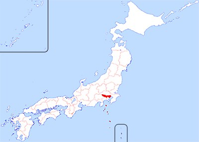

How to Finally Ghetto-ize the Wandering Jew in a Genre
Philip Roth in Japan

ACLA April, 2011
A whimsical piece of naval gazing criticism. Very fun to write. Very comparative. A necessary intervention into identity criticism. But who is listening?
How to Finally Ghetto-ize the Wandering Jew in a Genre
4/3/11
The proper resting place for Philip Roth’s meandering naval-gazing oeuvre must certainly be Japan where the “I-novel” genre has reigned as the supreme form of the modern novel since its appearance in the early 20th century. If questions of lost identity amidst the confrontation with the other appear again and again in Goodbye, Columbus, the Zuckerman series, and later more fantastic novels like Operation Shylock and the Plot Against America, they do so only in the shadow of the same issues having been raised in all too familiar ways by generations of Japanese writers singing their guilty, meek selves to whoever would listen. What reading Roth through the lens of the Japanese genre brings to Roth Studies is the necessity and virtue of stripping the work of its sticky coat of Jewishness without applying any final varnish of world literariness. What reading the Japanese genre in the example of Roth does for shishōsetsu theory is bring it back to its origins as a spin-off of european confession and ich-roman. If Roth is the lonely wandering Jewish author of an idiosyncratic oeuvre in the US, that oeuvre’s home is Japan, the final utopic dreamscape of Zionist and anti-Zionist alike. As the Jewishness of Roth and the Japaneseness of the I-novel have all too often been taken for granted, the self-centered worlds of these fictions provide a new identity (one no less sticky) that shock us out of our complacent assumptions about man and work, identity and text. What we finally arrive at through a consideration of Roth as a Japanese “I-novelist” may be closer to an identity of text rather than a notion of text as identity.